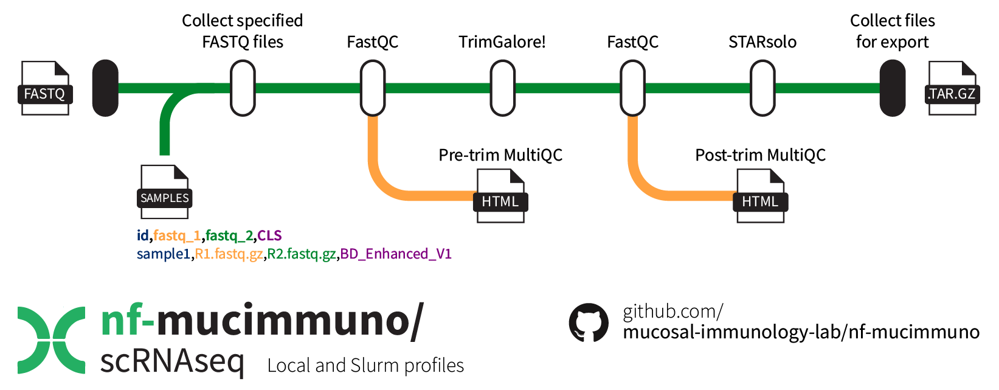

Single-cell RNAseq FASTQ pre-processing
Introduction
nf-mucimmuno/scRNAseq is a bioinformatics pipeline that can be used to run quality control steps and alignment to a host genome using STARsolo. It takes a samplesheet and FASTQ files as input, performs FastQC, trimming and alignment, and produces an output .tar.gz archive containing the collected outputs from STARsolo, ready for further processing downstream in R. MultiQC is run on the FastQC outputs both before and after TrimGalore! for visual inspection of sample quality – output .html files are collected in the results.

Citation
If you use this workflow and end up publishing something, please consider including a reference to our work! 😎🙏
Macowan, M., Pattaroni, C., Cardwell, B. A., & Marsland, B. (2024). nf-mucimmuno/scRNAseq (0.1.0). Zenodo. https://doi.org/10.5281/zenodo.14868176
Usage
Download the repository 📁
This repository contains the relevant Nextflow workflow components, including a conda environment and submodules, to run the pipeline. To retrieve this repository alone, run the retrieve_me.sh script above.
Git version requirements
Git sparse-checkout is required to retrieve just the nf-mucimmuno/scRNAseq pipeline. It was only introduced to Git in version 2.27.0, so ensure that the loaded version is high enough (or that there is a version loaded on the cluster at all). As of July 2024, the M3 MASSIVE cluster has version 2.38.1 available.
# Check git version
git --version
# Load git module if not loaded or insufficient version
module load git/2.38.1
First, create a new bash script file.
Add the contents to the file, save, and close.
#!/bin/bash
# Define variables
REPO_URL="https://github.com/mucosal-immunology-lab/nf-mucimmuno"
REPO_DIR="nf-mucimmuno"
SUBFOLDER="scRNAseq"
# Clone the repository with sparse checkout
git clone --no-checkout $REPO_URL
cd $REPO_DIR
# Initialize sparse-checkout and set the desired subfolder
git sparse-checkout init --cone
git sparse-checkout set $SUBFOLDER
# Checkout the files in the subfolder
git checkout main
# Move the folder into the main folder and delete the parent
mv $SUBFOLDER ../
cd ..
rm -rf $REPO_DIR
# Extract the larger gzipped CLS files
gunzip -r "$SUBFOLDER/modules/starsolo/CLS"
echo "Subfolder '$SUBFOLDER' has been downloaded successfully."
Then run the script to retrieve the repository into a new folder called scRNAseq, which will house your workflow files and results.
Create the conda environment 🐍
To create the conda environment, use the provided environment .yaml file. Then activate it to access required functions.
# Create the environment
mamba env create -f environment.yaml
# Activate the environment
mamba activate nextflow-scrnaseq
Prepare the genome 🧬
Create a new folder somewhere to store your genome files. Enter the new folder, and run the relevant code depending on your host organism. Run these steps in an interactive session with ~48GB RAM and 16 cores, or submit them as an sbatch job.
Do these databases exist already?
Please check if these are already available somewhere before regenerating them yourself!
STAR should be loaded already via the conda environment for the genome indexing step. We will set --sjdbOverhang to 79 to be suitable for use with the longer R2 FASTQ data resulting from BD Rhapsody single cell sequencing. This may require alteration for other platforms. Essentially, you just need to set --sjdbOverhang to the length of your R2 sequences minus 1.
Then use STAR to prepare the genome index.
Prepare your sample sheet ✏️
This pipeline requires a sample sheet to identify where your FASTQ files are located, and which cell label sequences (CLS) are being utilised.
More information about the CLS tags used with BD Rhapsody single-cell RNAseq library preparation can be found here:
- BD Rhapsody Sequence Analysis Pipeline – User's Guide
- BD Rhapsody Cell Label Structure – Python Script
More information about the CLS tags used with 10X Chromium single-cell RNAseq library preparation can be found here:
- 10X Chromium Single Cell 3' Solution V2 and V3 guide (Teich Lab)
- 10X Chromium V2 CLS sequences are 26bp long.
- 10X Chromium V3 CLS sequences are 28bp long.
The benefit of providing the name of the CLS bead versions in the sample sheet is that you can combine runs that utilise different beads together in the same workflow. Keep in mind that if you do this though, there may be some bead-related batch effects to address and correct downstream – it is always important to check for these effects when combining sequencing runs in any case. The current options are:
| CLS option | Description |
|---|---|
| BD_Original | The original BD rhapsody beads and linker sequences |
| BD_Enhanced_V1 | First version of enhanced beads with polyT and 5prime capture oligo types, shorter linker sequences, longer polyT, and 0-3 diversity insert bases at the beginning of the sequence |
| BD_Enhanced_V2 | Same structure as the enhanced (V1) beads, but with increased CLS diversity (384 vs. 96) |
| 10X_Chromium_V2 | Feature a 16 bp cell barcode and a 10 bp unique molecular identifier (UMI) |
| 10X_Chromium_V3 | Enhanced sequencing accuracy and resolution with a 16 bp cell barcode and a 12 bp UMI |
Further, we also need to provide the path to the STAR genome index folder for each sample – while in many cases this value will remain constant, the benefit of providing this information is that you can process runs with different R2 sequence lengths at the same time. Recall from above that the genome index you use should use an --sjdbOverhang length that of your R2 sequences minus 1.
Your sample sheet should look as follows, ensuring you use the exact column names as below.
File paths on M3
Remember that on the M3 MASSIVE cluster, you need to use the full file path – relative file paths don't usually work.
sample,fastq_1,fastq_2,CLS,GenomeIndex
CONTROL_S1,CONTROL_S1_R1.fastq.gz,CONTROL_S1_R2.fastq.gz,BD_Enhanced_V2,mf33/Databases/ensembl/human/STARgenomeIndex79
CONTROL_S2,CONTROL_S2_R1.fastq.gz,CONTROL_S1_R2.fastq.gz,BD_Enhanced_V2,mf33/Databases/ensembl/human/STARgenomeIndex79
TREATMENT_S1,TREATMENT_S1_R1.fastq.gz,TREATMENT_S1_R2.fastq.gz,BD_Enhanced_V2,mf33/Databases/ensembl/human/STARgenomeIndex79
An example is provided here.
Running the pipeline 🏃
Now you can run the pipeline. You will need to set up a parent job to run each of the individual jobs – this can be either an interactive session, or an sbatch job. For example:
# Start an interactive session with minimal resources
smux n --time=3-00:00:00 --mem=16GB --ntasks=1 --cpuspertask=2 -J nf-STARsolo
Set the correct sample sheet location
Make sure you alter the nextflow.config file to provide the path to your sample sheet, unless it is ./data/samplesheet.csv which is the default for the cluster profile. Stay within the top cluster profile section to alter settings for Slurm-submitted jobs.
Inside your interactive session, be sure to activate your nextflow-scrnaseq environment from above. Then, inside the scRNAseq folder, begin the pipeline using the following command (ensuring you use the cluster profile to make use of the Slurm workflow manager).
# Activate conda environment
mamba activate nextflow-scrnaseq
# Begin running the pipeline
nextflow run process_raw_reads.nf -resume -profile cluster
Customisation ⚙️
There are several customisation options that are available within the nextflow.config file. While the defaults should be suitable for those with access to the M3 MASSIVE cluster genomics partition, for those without access, of for those who require different amounts of resources, there are ways to change these.
In order to work with different technologies, and accommodate for differences in cell label structure (CLS), the STAR parameters --soloType and --soloCBmatchWLtype are set in a CLS-dependent manner. This is required, because the BD Rhapsody system has a complex barcode structure. The 10X Chromium system on the other hand has a simple barcode structure with a single barcode and single UMI. Additionally, the --soloCBmatchWLtype = EditDist2 only works with --soloType = CB_UMI_Complex, and therefore --soloCBmatchWLtype = 1MM multi Nbase pseudocounts is used for 10X Chromium runs.
- For BD Rhapsody sequencing:
--soloType = CB_UMI_Complexand--soloCBmatchWLtype = EditDist2. - For 10X Chromium sequencing:
--soloType = CB_UMI_Simpleand--soloCBmatchWLtype = 1MM multi Nbase pseudocounts. - Additionally, 10X Chromium runs use
--clipAdapterType = CellRanger4.
To adjust the cluster profile settings, stay within the appropriate section at the top of the file.
Parameters
Visit STAR documentation for explanations of all available options for STARsolo.
| Option | Description |
|---|---|
| samples_csv | The file path to your sample sheet |
| outdir | A new folder name to be created for your results |
| trimgalore.quality | The minimum quality before a sequence is truncated (default: 20) |
| trimgalore.adapter | A custom adapter sequence for the R1 sequences (default: 'AGATCGGAAGAGCACACGTCTGAACTCCAGTCAC') |
| trimgalore.adapter2 | A custom adapter sequence for the R2 sequences (default: 'AGATCGGAAGAGCGTCGTGTAGGGAAAGAGTGT') |
| starsolo.soloUMIdedup | The type of UMI deduplication (default: '1MM_CR') |
| starsolo.soloUMIfiltering | The type of UMI filtering for reads uniquely mapping to genes (default: 'MultiGeneUMI_CR') |
| starsolo.soloCellFilter | The method type and parameters for cell filtering (default: 'EmptyDrops_CR') |
| starsolo.soloMultiMappers | The counting method for reads mapping for multiple genes (default: 'EM') |
Process
These settings relate to resource allocation and cluster settings. FASTQC and TRIMGALORE steps can take longer than 4 hours for typical single-cell RNAseq file, and therefore the default option is to run these steps on the comp partition.
| Option | Description |
|---|---|
| executor | The workload manager (default: 'slurm') |
| conda | The conda environment to use (default: './environment.yaml') |
| queueSize | The maximum number of jobs to be submitted at any time (default: 12) |
| submitRateLimit | The rate allowed for job submission – either a number of jobs per second (e.g. 20sec) or a number of jobs per time period (e.g. 20/5min) (default: '1/2sec') |
| memory | The maximum global memory allowed for Nextflow to use (default: '320 GB') |
| FASTQC.memory | Memory for FASTQC step to use (default: '80 GB') |
| FASTQC.cpus | Number of CPUs for FASTQC step to use (default: 8) |
| FASTQC.clusterOptions | Specific cluster options for FASTQC step (default: '--time=8:00:00') |
| TRIMGALORE.memory | Memory for TRIMGALORE step to use (default: '80 GB') |
| TRIMGALORE.cpus | Number of CPUs for TRIMGALORE step to use (default: 8) |
| TRIMGALORE.clusterOptions | Specific cluster options for TRIMGALORE step (default : '--time=8:00:00') |
| STARSOLO.memory | Memory for STARSOLO step to use (default: '80 GB') |
| STARSOLO.cpus | Number of CPUs for STARSOLO step to use (default: 12) |
| STARSOLO.clusterOptions | Specific cluster options for STARSOLO step (default : '--time=4:00:00 --partition=genomics --qos=genomics') |
| COLLECT_EXPORT_FILES.memory | Memory for COLLECT_EXPORT_FILES step to use (default: '32 GB') |
| COLLECT_EXPORT_FILES.cpus | Number of CPUs for COLLECT_EXPORT_FILES step to use (default: 8) |
| COLLECT_EXPORT_FILES.clusterOptions | Specific cluster options for COLLECT_EXPORT_FILES step (default : '--time=4:00:00 --partition=genomics --qos=genomics') |
Outputs
Several outputs will be copied from their respective Nextflow work directories to the output folder of your choice (default: results).
Alignment summary utility script
 There is also a utility script in the main
There is also a utility script in the main scRNAseq directory called collect_alignment_summaries.sh. This will navigate into each of the sample folders inside results/STARsolo, and retrieve some key information for you to validate that the alignment worked successfully (from the GeneFull_Ex50pAS subfolder). This can otherwise take quite some time to go through each folder if you have a lot of samples.
- After running this, a new file called
AlignmentSummary.txtwill be generated in thescRNAseqdirectory. Each sample will be listed by name, with the number of reads, percentage of reads with valid barcodes, and estimated number of cells. - It will be immediately obvious that something has gone wrong if you see that the percentage of reads with valid barcodes is very low (e.g.
0.02= 2% valid barcodes) – this is usually paired with a very low estimated cell number. - This could indicate that you have used the wrong barcode version for your runs, and therefore the associated barcode whitelist used by the pipeline was incorrect.
A successful example is shown below 
Sample: Healthy1
Number of Reads,353152389
Reads With Valid Barcodes,0.950799
Estimated Number of Cells,6623
Sample: Healthy2
Number of Reads,344989615
Reads With Valid Barcodes,0.948577
Estimated Number of Cells,6631
# etc...
Collected export files 📦
The main output will be a single archive file called export_files.tar.gz that you will take for further downstream pre-processing. It contains STARsolo outputs for each sample, with the respective subfolders described below.
Reports 📄
Within the reports folder, you will find the MultiQC outputs from pre- and post-trimming.
STARsolo ⭐
Contains the outputs for each sample from STARsolo, including various log files and package version information.
The main output of interest here is a folder called {sample}.Solo.out, which houses subfolders called Gene, GeneFull_Ex50pAS, and Velocyto. It is this main folder for each sample that is added to export_files.tar.gz.
* As you will use the gene count data from GeneFull_Ex50pAS downstream, it is a good idea to check the Summary.csv within this folder for each sample to ensure mapping was successful (or use the utility script above).
* One of the key values to inspect is Reads With Valid Barcodes, which should be >0.8 (indicating at least 80% of reads had valid barcodes).
* If you note that this value is closer to 0.02 (i.e. ~2% had valid barcodes), you should double-check to make sure you specified the correct BD Rhapsody beads version. For instance, if you specified BD_Enhanced_V1 but actually required BD_Enhanced_V2, the majority of your reads will not match the whitelist, and therefore the reads will be considered invalid.
Folder structure
Below is an example of the output structure for running one sample. The STARsolo folder would contain additional samples as required.
scRNAseq
└── results/
├── export_files.tar.gz
├── reports/
│ ├── pretrim_multiqc_report.html
│ └── posttrim_multiqc_report.html
└── STARsolo/
└── sample1/
├── sample1.Solo.out/
│ ├── Gene/
│ │ ├── filtered/
│ │ │ ├── barcodes.tsv.gz
│ │ │ ├── features.tsv.gz
│ │ │ └── matrix.mtx.gz
│ │ ├── raw/
│ │ │ ├── barcodes.tsv.gz
│ │ │ ├── features.tsv.gz
│ │ │ ├── matrix.mtx.gz
│ │ │ └── UniqueAndMult-EM.mtx.gz
│ │ ├── Features.stats
│ │ ├── Summary.csv
│ │ └── UMIperCellSorted.txt
│ ├── GeneFull_Ex50pAS/
│ │ ├── filtered/
│ │ │ ├── barcodes.tsv.gz
│ │ │ ├── features.tsv.gz
│ │ │ └── matrix.mtx.gz
│ │ ├── raw/
│ │ │ ├── barcodes.tsv.gz
│ │ │ ├── features.tsv.gz
│ │ │ ├── matrix.mtx.gz
│ │ │ └── UniqueAndMult-EM.mtx.gz
│ │ ├── Features.stats
│ │ ├── Summary.csv
│ │ └── UMIperCellSorted.txt
│ ├── Velocyto/
│ │ ├── filtered/
│ │ │ ├── ambiguous.mtx.gz
│ │ │ ├── barcodes.tsv.gz
│ │ │ ├── features.tsv.gz
│ │ │ ├── spliced.mtx.gz
│ │ │ └── unspliced.mtx.gz
│ │ ├── raw/
│ │ │ ├── ambiguous.mtx.gz
│ │ │ ├── barcodes.tsv.gz
│ │ │ ├── features.tsv.gz
│ │ │ ├── spliced.mtx.gz
│ │ │ └── unspliced.mtx.gz
│ │ ├── Features.stats
│ │ └── Summary.csv
│ └── Barcodes.stats
├── sample1.Log.final.out
├── sample1.Log.out
├── sample1.Log.progress.out
└── versions.yml
Rights
- Copyright ©️ 2024 Mucosal Immunology Lab, Monash University, Melbourne, Australia.
- Licence: This pipeline is provided under the MIT license.
- Authors: M. Macowan
- FastQC: Babraham Bioinformatics
- MultiQC: National Genomics Infrastructure (SciLifeLab, Sweden), Seqera Labs et al.
- TrimGalore!: Babraham Bioinformatics
- STARsolo: Alex Dobin et al.